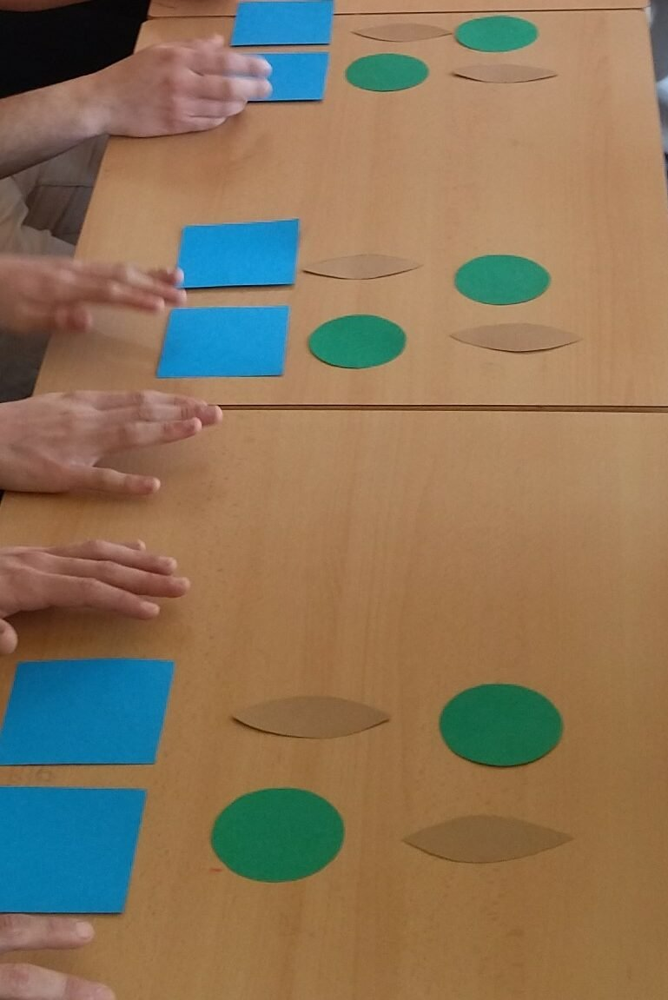
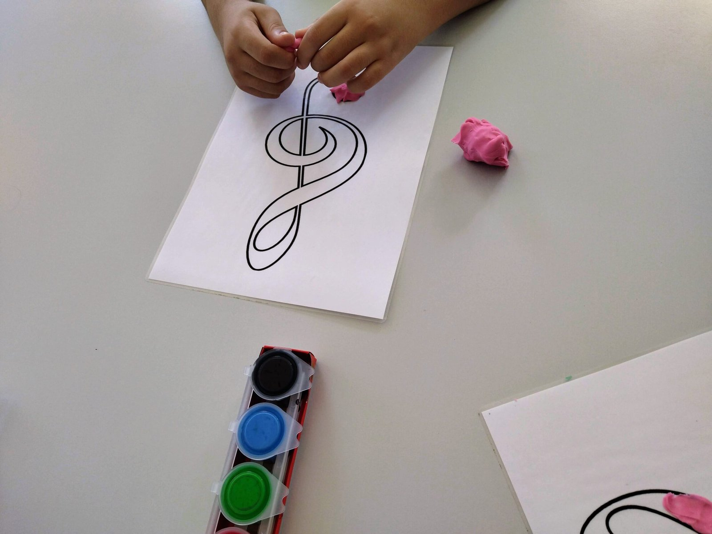
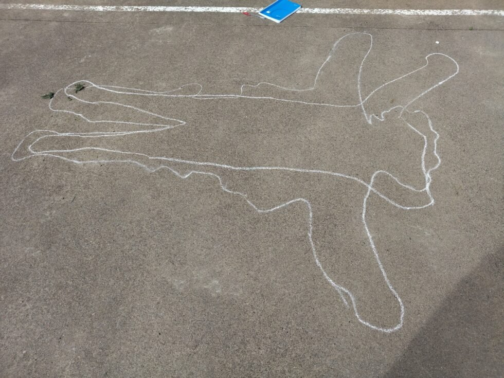
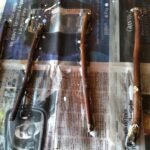
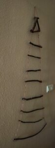
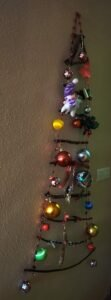

<?xml version="1.0" encoding="UTF-8"?><rss version="2.0"
	xmlns:content="http://purl.org/rss/1.0/modules/content/"
	xmlns:wfw="http://wellformedweb.org/CommentAPI/"
	xmlns:dc="http://purl.org/dc/elements/1.1/"
	xmlns:atom="http://www.w3.org/2005/Atom"
	xmlns:sy="http://purl.org/rss/1.0/modules/syndication/"
	xmlns:slash="http://purl.org/rss/1.0/modules/slash/"
	>

<channel>
	<title>Musicoterapia y terapias artísticas | Rita Valero</title>
	<atom:link href="./index.html" rel="self" type="application/rss+xml" />
	<link>../../../index.html</link>
	<description>Voz y palabras</description>
	<lastBuildDate>Wed, 24 Aug 2022 11:27:13 +0000</lastBuildDate>
	<language>ca</language>
	<sy:updatePeriod>
	hourly	</sy:updatePeriod>
	<sy:updateFrequency>
	1	</sy:updateFrequency>
	<generator>https://wordpress.org/?v=7.1.3</generator>

<image>
	<url>../../../wp-content/uploads/2021/08/cropped-favicon-rita-valero-32x32.jpg</url>
	<title>Musicoterapia y terapias artísticas | Rita Valero</title>
	<link>../../../index.html</link>
	<width>32</width>
	<height>32</height>
</image> 
	<item>
		<title>Talleres de Música</title>
		<link>../../../project/talleres-de-musica/index.html</link>
					<comments>../../../project/talleres-de-musica/index.html#respond</comments>
		
		<dc:creator><![CDATA[Rita Valero]]></dc:creator>
		<pubDate>Fri, 21 Jan 2022 17:56:53 +0000</pubDate>
				<guid isPermaLink="false">http://novaweb.ritavalero.com/?post_type=project&#038;p=744</guid>

					<description><![CDATA[Talleres de música para grupos de todas las edades y condiciones: Musicaje: Taller en el que se utiliza el lenguaje musical desde una perspectiva lúdica. MusiquEmos: Taller en el que a través de la música, se trabajan las emociones. Musiclado: Construcción de instrumentos con material reciclado. Sing-percusion: Taller en el que acompaña: la percusión corporal [&#8230;]]]></description>
										<content:encoded><![CDATA[<p><strong>Talleres</strong> de música para grupos de todas las edades y condiciones:</p>
<blockquote><p><strong>Musicaje: </strong>Taller en el que se utiliza el lenguaje musical desde una perspectiva lúdica.</p></blockquote>
<blockquote><p><strong>MusiquEmos: </strong>Taller en el que a través de la música, se trabajan las emociones.</p></blockquote>
<blockquote><p><b>Musiclado: </b>Construcción de instrumentos con material reciclado.</p></blockquote>
<blockquote><p><strong>Sing-percusion: </strong>Taller en el que acompaña: la percusión corporal o percusión con pequeños objetos utilizados como instrumentos, con la voz.</p></blockquote>
<p>          </p>
]]></content:encoded>
					
					<wfw:commentRss>../../../project/talleres-de-musica/feed/index.html</wfw:commentRss>
			<slash:comments>0</slash:comments>
		
		
			</item>
		<item>
		<title>Carta</title>
		<link>../../../project/carta/index.html</link>
					<comments>../../../project/carta/index.html#respond</comments>
		
		<dc:creator><![CDATA[Rita Valero]]></dc:creator>
		<pubDate>Sun, 16 Jan 2022 19:07:48 +0000</pubDate>
				<guid isPermaLink="false">http://novaweb.ritavalero.com/?post_type=project&#038;p=835</guid>

					<description><![CDATA[Esta actividad consiste en elaborar una carta muy especial: 1ª Parte: Mírate durante 5 minutos en el espejo. Ponte una alarma y procura que nadie te interrumpa. No te mires los granitos o las arrugas. Mírate a los ojos, mírate dentro de ti. 2ª Parte: Escribe cómo te has sentido. 3ª Parte: ¿Has escrito alguna [&#8230;]]]></description>
										<content:encoded><![CDATA[<p>Esta actividad consiste en elaborar una carta muy especial:</p>
<p><strong>1ª Parte:</strong><br />
Mírate durante 5 minutos en el espejo. Ponte una alarma y procura que nadie te interrumpa. No te mires los granitos o las arrugas. Mírate a los ojos, mírate dentro de ti.</p>
<p><strong>2ª Parte:</strong><br />
Escribe cómo te has sentido.</p>
<p><strong>3ª Parte:</strong><br />
¿Has escrito alguna vez una carta de amor?<br />
Piensa en todo lo que le escribirías a tu enamorado/enamorada, hablándole de las cosas que más te gustan de ella o él, de cómo disfrutas de los ratos que pasáis juntos y las actividades que hace, de los momentos que compartís, de cómo es físicamente, de carácter, etc.<br />
Y ahora, piensa que tu enamorado / tu enamorada, ¡eres tú mismo / tú misma!</p>
<p><strong>Escríbete esta carta de amor. La puedes decorar como harías por otra persona, pero esta carta, será de ti hacia ti.</strong></p>
<p>&nbsp;</p>
]]></content:encoded>
					
					<wfw:commentRss>../../../project/carta/feed/index.html</wfw:commentRss>
			<slash:comments>0</slash:comments>
		
		
			</item>
		<item>
		<title>Siluetas</title>
		<link>../../../project/siluetas/index.html</link>
					<comments>../../../project/siluetas/index.html#respond</comments>
		
		<dc:creator><![CDATA[Rita Valero]]></dc:creator>
		<pubDate>Sun, 16 Jan 2022 18:34:48 +0000</pubDate>
				<guid isPermaLink="false">http://novaweb.ritavalero.com/?post_type=project&#038;p=829</guid>

					<description><![CDATA[Una de las actividades que hacemos en MYTA es la llamada: Siluetas. Por parejas, una de las personas dibuja el perfil de la otra en el suelo, con una tiza. Después la persona que ha dibujado, intenta tumbarse dentro de la silueta de la 1ª persona. Finalmente se dibuja la silueta de la 2ª persona [&#8230;]]]></description>
										<content:encoded><![CDATA[<p>Una de las actividades que hacemos en MYTA es la llamada: <strong>Siluetas.</strong></p>
<p>Por parejas, una de las personas dibuja el perfil de la otra en el suelo, con una tiza.</p>
<p>Después la persona que ha dibujado, intenta tumbarse dentro de la silueta de la 1ª persona.</p>
<p>Finalmente se dibuja la silueta de la 2ª persona sobre la de la 1ª, creándose las siguientes reflexiones:</p>
<blockquote><p><strong><em>¿Te gusta que te remarquen tu perfil?</em></strong></p>
<p><strong><em>¿Cómo te sientes dentro de la silueta de otra persona?</em></strong></p>
<p><strong><em>¿Hay algún perfil igual o todos son diferentes?</em></strong></p>
<p><strong><em>¿Crees que realmente te puedes poner «en el lugar de la otra persona» o la otra persona «en tu lugar»?</em></strong></p></blockquote>
<p></p>
]]></content:encoded>
					
					<wfw:commentRss>../../../project/siluetas/feed/index.html</wfw:commentRss>
			<slash:comments>0</slash:comments>
		
		
			</item>
		<item>
		<title>Terapias Artísticas en Navidad</title>
		<link>../../../project/terapias-artisticas-arbol-de-navidad/index.html</link>
					<comments>../../../project/terapias-artisticas-arbol-de-navidad/index.html#respond</comments>
		
		<dc:creator><![CDATA[Rita Valero]]></dc:creator>
		<pubDate>Sat, 15 Jan 2022 19:27:09 +0000</pubDate>
				<guid isPermaLink="false">http://novaweb.ritavalero.com/?post_type=project&#038;p=793</guid>

					<description><![CDATA[Siendo las vacaciones de invierno unas fechas con una enorme carga social, emocional y familiar, uno de los talleres que propongo a nivel terapéutico, es la construcción de tu propio árbol de navidad. Esta actividad de arte-terapia, requiere de un paseo por el bosque, donde además de relajarte, respirar aire puro, recargarte con vitamina D, [&#8230;]]]></description>
										<content:encoded><![CDATA[<p>Siendo las vacaciones de invierno unas fechas con una enorme carga social, emocional y familiar, uno de los talleres que propongo a nivel terapéutico, es la construcción de tu propio árbol de navidad.</p>
<p>Esta actividad de arte-terapia, requiere de un paseo por el bosque, donde además de relajarte, respirar aire puro, recargarte con vitamina D, y estar en contacto con la naturaleza, cosa que implica que has caminado, te has oxigenado y has salido de casa, pues, además de todo eso, recogerás algunas ramas secas, que puedes ir encontrando por el camino. Reitero recogerás (del suelo), no arrancarás de los árboles, a no ser que los estés podando.</p>
<p>&nbsp;</p>
<p>Seguramente las ramas serán de distintos tamaños, así que cuando llegues a casa, tendrás que ordenarlas de más larga a más corta. Si es necesario, puedes cortar alguna, para tener todas las medidas necesarias.</p>
<p>&nbsp;</p>
<p>Luego procederás a lavar las ramas, dejarlas secar, y pasarles una capa protectora de cola y agua a partes iguales.</p>
<p></p>
<p>&nbsp;</p>
<p>&nbsp;</p>
<p>&nbsp;</p>
<p>&nbsp;</p>
<p>&nbsp;</p>
<p>Una vez secas, las ordenas, y vas atando una cuerda a los extremos, de manera que te quede esta bonita estructura.</p>
<p>        </p>
<p>Finalmente, puedes colgarla y decorarla como más te guste. Habrás pasado unas cuantas horas (o todo un día entero), creando, diseñando y haciendo con tus propias manos, tu árbol de navidad.</p>
<p></p>
<p>&nbsp;</p>
<p>&nbsp;</p>
<p>&nbsp;</p>
<p>&nbsp;</p>
<p>&nbsp;</p>
<p>&nbsp;</p>
<p>&nbsp;</p>
<p>&nbsp;</p>
<p>&nbsp;</p>
<p>Puedes hacer esta actividad terapéutica en los días más señalados. Entre el paseo, la construcción y la decoración,  te estarás dando el regalo del tiempo y la creatividad a ti mism@.</p>
]]></content:encoded>
					
					<wfw:commentRss>../../../project/terapias-artisticas-arbol-de-navidad/feed/index.html</wfw:commentRss>
			<slash:comments>0</slash:comments>
		
		
			</item>
		<item>
		<title>Musicoterapia Autorrealizadora</title>
		<link>../../../project/musicoterapia-autorrealizadora/index.html</link>
					<comments>../../../project/musicoterapia-autorrealizadora/index.html#respond</comments>
		
		<dc:creator><![CDATA[Rita Valero]]></dc:creator>
		<pubDate>Mon, 27 Dec 2021 17:59:22 +0000</pubDate>
				<guid isPermaLink="false">http://novaweb.ritavalero.com/?post_type=project&#038;p=670</guid>

					<description><![CDATA[La musicoterapia es de orientación humanista y parte de la confianza en las capacidades expresivas, creativas y musicales que son inherentes a todos los seres humanos, sin tener conocimiento específico alguno de música. Todos estamos inmersos en un mundo donde hay música, un lenguaje que nos es familiar aunque no sepamos leerlo ni escribirlo, y [&#8230;]]]></description>
										<content:encoded><![CDATA[<div id="tw-container" data-cp="1" data-is-ver="false" data-nnttsvi="1" data-sm="1" data-sugg-time="500" data-sugg-url="https://clients1.google.com/complete/search" data-uilc="ca">
<div id="tw-ob" class="tw-src-ltr">
<div class="oSioSc">
<div id="tw-target">
<div id="kAz1tf" class="g9WsWb">
<div id="tw-target-text-container" class="tw-ta-container F0azHf tw-nfl" tabindex="0">
<p>La musicoterapia es de orientación humanista y parte de la confianza en las capacidades expresivas, creativas y musicales que son inherentes a todos los seres humanos, sin tener conocimiento específico alguno de música.</p>
<p>Todos estamos inmersos en un mundo donde hay música, un lenguaje que nos es familiar aunque no sepamos leerlo ni escribirlo, y con el que nos podemos expresar sin esfuerzo, tal y como hacíamos cuando éramos pequeños. Tan sólo hay que aprender a soltarse, perder el miedo, explorar y recuperar las habilidades olvidadas.</p>
<p>La creatividad expresada musicalmente produce una gran satisfacción y realización personal porque implica a la persona de forma integradora con cuerpo, alma, emociones e intelecto. En este camino hacia la autorrealización el descubrimiento de la propia voz es un factor decisivo.</p>
<p>Tocando y cantando se crea un estado de máxima concentración, un estado de total presencia en el “aquí y ahora” similar al que se logra con la meditación. Esta práctica no sólo ayuda a detener los pensamientos obsesivos o recurrentes, sino que proporciona una sensación de libertad y de tranquilidad física, emocional y mental. La vibración de los sonidos actúa como un masaje que ayuda a equilibrarse externa e internamente, como un hilo conductor que lleva a centrarse y sentirse más vivo y más en contacto con las experiencias vitales y enriquecedoras. Esta vivencia nos hace sentir realizados como personas y nos ayuda a percibir el dolor con menor tensión y crispación y con un estado anímico más tranquilo y sosegado.</p>
<p>La Musicoterapia aprovecha las aptitudes catárticas de la música, que favorecen la manifestación emocional y la descarga de inquietudes y angustias, y usa las capacidades balsámicas de la melodía y el sonido, que pueden ofrecer consuelo y reconfortar a las personas que sufren.</p>
<p><strong>CONTENIDOS</strong></p>
<ul>
<li>Técnicas de relajación</li>
<li>Actividades prácticas</li>
<li>Elementos artísticos aplicados a problemas disciplinarios y conductuales</li>
<li>Autoconocimiento: conocer estados emocionales propios</li>
<li>Convivencia y colaboración</li>
<li>Salud emocional</li>
</ul>
</div>
</div>
</div>
</div>
</div>
<div class="dURPtb"></div>
<div>
<div></div>
</div>
</div>
<div class="KFFQ0c xKf9F"></div>
]]></content:encoded>
					
					<wfw:commentRss>../../../project/musicoterapia-autorrealizadora/feed/index.html</wfw:commentRss>
			<slash:comments>0</slash:comments>
		
		
			</item>
		<item>
		<title>Los elementos de la música y su efecto sobre la persona</title>
		<link>../../../project/los-elementos-de-la-musica-y-su-efecto-sobre-la-persona/index.html</link>
					<comments>../../../project/los-elementos-de-la-musica-y-su-efecto-sobre-la-persona/index.html#respond</comments>
		
		<dc:creator><![CDATA[Rita Valero]]></dc:creator>
		<pubDate>Mon, 27 Dec 2021 17:51:18 +0000</pubDate>
				<guid isPermaLink="false">http://novaweb.ritavalero.com/?post_type=project&#038;p=668</guid>

					<description><![CDATA[El sonido es una realidad física formada por las vibraciones sonoras que nos llegan al oído transmitidas por el aire. Cuando escuchamos una música muy rítmica, por ejemplo de tambores africanos, sentimos un impulso irrefrenable de movernos y bailar, siguiendo la música. El ritmo es el primer elemento estructurado de la música y proporciona sensación [&#8230;]]]></description>
										<content:encoded><![CDATA[<p>El sonido es una realidad física formada por las vibraciones sonoras que nos llegan al oído transmitidas por el aire. Cuando escuchamos una música muy rítmica, por ejemplo de tambores africanos, sentimos un impulso irrefrenable de movernos y bailar, siguiendo la música.</p>
<p>El ritmo es el primer elemento estructurado de la música y proporciona sensación de orden, organización. El equivalente en el ser humano es el aspecto fisiológico, porque nuestro organismo funciona a partir de ritmos, al igual que la naturaleza: el latido del corazón, la respiración, la circulación sanguínea, los ciclos de sueño y vigilia, los ciclos menstruales, las mareas, las estaciones, los años…</p>
<p>Todos estos eventos siguen una secuencia de hechos que se repiten en un período de tiempo más corto o más largo.</p>
<p>A veces, una canción que escuchamos o cantamos puede hacernos llorar. Otras veces nos sentimos alegres con alguna música. Es la melodía, la sucesión de diferentes alturas de los sonidos, la que nos provoca cambios en el estado de ánimo. Podemos afirmar que la melodía es el elemento de la música que nos pone en contacto con nuestras emociones.</p>
<p>Y la armonía, que consiste en la superposición de distintas alturas de sonido que suenan a la vez, como cuando oímos un acorde o una música cantada, tocada o interpretada por un corazón o por una orquesta.</p>
<p>Darnos cuenta de esta simultaneidad, procesarla y comprenderla requiere de una actividad intelectual importante.</p>
<p>Por tanto, en la música encontramos integrados los diferentes aspectos de la persona: físico (ritmo), emocional (melodía) y mental (armonía). Y desde esa integración podemos seguir ascendiendo a otros niveles y llegar al aspecto espiritual, porque la música también es capaz de hacernos experimentar estados elevados de conciencia.</p>
<p>Está comprobado que la música es capaz de originar cambios en la persona, que pueden ser fisiológicos, emocionales, cognitivos, interpersonales, espirituales.</p>
<p>Las numerosas investigaciones que se han llevado a cabo hasta el momento demuestran una gran capacidad transformadora y sanadora de la música cuando se aplica en un entorno terapéutico, con la intervención de un musicoterapeuta profesional, con un plan de tratamiento, unos objetivos y un compromiso por parte del paciente en tomar parte activa en la terapia.</p>
]]></content:encoded>
					
					<wfw:commentRss>../../../project/los-elementos-de-la-musica-y-su-efecto-sobre-la-persona/feed/index.html</wfw:commentRss>
			<slash:comments>0</slash:comments>
		
		
			</item>
		<item>
		<title>¿Qué es y cómo actúa la Musicoterapia?</title>
		<link>../../../project/que-es-y-como-actua-la-musicoterapia/index.html</link>
					<comments>../../../project/que-es-y-como-actua-la-musicoterapia/index.html#respond</comments>
		
		<dc:creator><![CDATA[Rita Valero]]></dc:creator>
		<pubDate>Mon, 27 Dec 2021 17:42:25 +0000</pubDate>
				<guid isPermaLink="false">http://novaweb.ritavalero.com/?post_type=project&#038;p=666</guid>

					<description><![CDATA[Hay casos en los que la Musicoterapia se aplica de una forma receptiva (que no quiere decir pasiva) y el participante escucha música guiado por un terapeuta que le ayuda a elaborar y exteriorizar lo que siente La terapia también se puede realizar animando a la persona a que se implique activamente en la sesión [&#8230;]]]></description>
										<content:encoded><![CDATA[<p>Hay casos en los que la Musicoterapia se aplica de una forma receptiva (que no quiere decir pasiva) y el participante escucha música guiado por un terapeuta que le ayuda a elaborar y exteriorizar lo que siente</p>
<p>La terapia también se puede realizar animando a la persona a que se implique activamente en la sesión cantando y tocando instrumentos sencillos (sobre todo de percusión), a la vez que busca su modo particular y personal de manifestar su mundo interno y sus conflictos.</p>
<p>La música cantada y tocada por el propio participante tiene la capacidad de conmoverle profundamente, es una vía de expresión de sentimientos que ejerce un fuerte impacto sobre el estado de ánimo, creando situaciones favorables a la descarga emocional y a la manifestación de alegría, tristeza, angustia, rabia&#8230;</p>
]]></content:encoded>
					
					<wfw:commentRss>../../../project/que-es-y-como-actua-la-musicoterapia/feed/index.html</wfw:commentRss>
			<slash:comments>0</slash:comments>
		
		
			</item>
		<item>
		<title>El arte y la música, una vía terapéutica de expresión y comunicación</title>
		<link>../../../project/el-arte-y-la-musica-una-via-terapeutica-de-expresion-y-comunicacion/index.html</link>
					<comments>../../../project/el-arte-y-la-musica-una-via-terapeutica-de-expresion-y-comunicacion/index.html#respond</comments>
		
		<dc:creator><![CDATA[Rita Valero]]></dc:creator>
		<pubDate>Mon, 27 Dec 2021 17:36:41 +0000</pubDate>
				<guid isPermaLink="false">http://novaweb.ritavalero.com/?post_type=project&#038;p=664</guid>

					<description><![CDATA[A lo largo de la historia todas las culturas han utilizado el arte y la música para contribuir a crear y fortalecer vínculos. Así, muy a menudo la música se ha utilizado, y todavía se utiliza, para acompañar o celebrar eventos importantes o trascendentales de la vida, que unen a todos los participantes en una [&#8230;]]]></description>
										<content:encoded><![CDATA[<p>A lo largo de la historia todas las culturas han utilizado el arte y la música para contribuir a crear y fortalecer vínculos. Así, muy a menudo la música se ha utilizado, y todavía se utiliza, para acompañar o celebrar eventos importantes o trascendentales de la vida, que unen a todos los participantes en una misma actividad, permitiéndoles expresar sus emociones y ayudándoles a comunicarse con los demás.</p>
<p>La práctica artística y musical ayuda a romper el aislamiento y la soledad y permite exteriorizar el mundo interno, aliviando el sufrimiento y la angustia o manifestando la alegría.</p>
<p>Los antiguos griegos ya conocían la capacidad sanadora del arte y la música y la utilizaron. Posteriormente, diferentes civilizaciones, en mayor o menor grado, según su sensibilidad, hicieron uso de técnicas musicales para paliar los síntomas de diversas patologías.</p>
<p>La instauración formal de la Musicoterapia como Ciencia en el mundo actual data de la segunda mitad del siglo XX, momento en el que se fundó la Asociación Americana.</p>
<p>A partir de entonces las investigaciones sobre los resultados de la aplicación de la Musicoterapia han aumentado y se han difundido por todo el mundo.</p>
]]></content:encoded>
					
					<wfw:commentRss>../../../project/el-arte-y-la-musica-una-via-terapeutica-de-expresion-y-comunicacion/feed/index.html</wfw:commentRss>
			<slash:comments>0</slash:comments>
		
		
			</item>
	</channel>
</rss>
